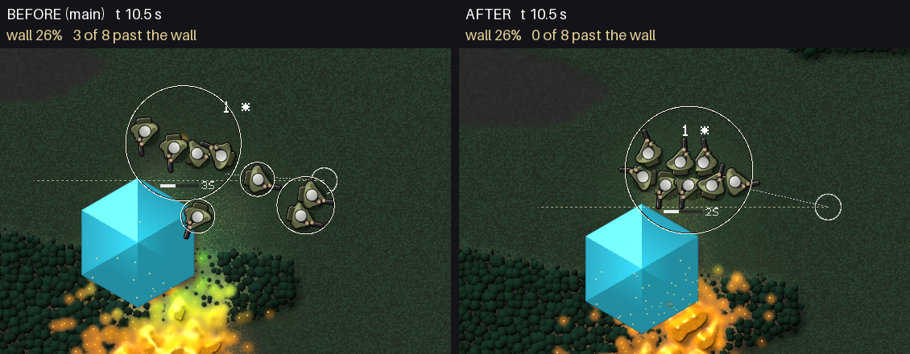
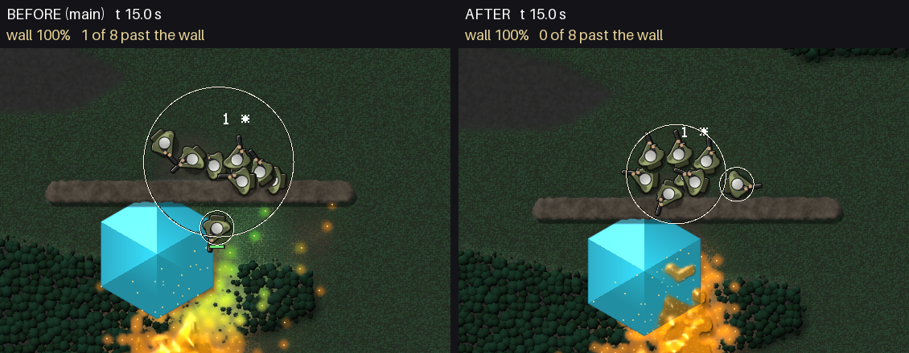

<title>Walls Keep the Squad Home</title>
<meta name="claude:viewport-fit-sides" content="cover">
<style>
/* Layout: one reading column, the clip first, counts beside it, then what changed. */
:root {
  --bg: #f3f5f1; --fg: #1d231c; --muted: #5d6858; --line: #d3dacd; --accent: #4f6b2f; --bad: #a3462c;
  --display: "Space Grotesk", system-ui, sans-serif; --body: "Inter", system-ui, sans-serif;
}
@media (prefers-color-scheme: dark) { :root:not([data-theme="light"]) { --bg: #151a14; --fg: #e3e8de; --muted: #9aa592; --line: #2e372b; --accent: #9cc06a; --bad: #e08a6c; color-scheme: dark } }
:root[data-theme="dark"] { --bg: #151a14; --fg: #e3e8de; --muted: #9aa592; --line: #2e372b; --accent: #9cc06a; --bad: #e08a6c; color-scheme: dark }
body { background: var(--bg); color: var(--fg); font-family: var(--body); line-height: 1.55; padding-block: 28px 48px; padding-left: max(16px, env(safe-area-inset-left, 0px)); padding-right: max(16px, env(safe-area-inset-right, 0px)); }
main { max-width: 1140px; margin: 0 auto; display: grid; gap: 22px; }
h1, h2 { font-family: var(--display); text-wrap: balance; margin: 0; }
h1 { font-size: 1.9rem; } h2 { font-size: 1.15rem; }
p, li { max-width: 68ch; margin: 0; }
.lede { color: var(--muted); }
video, img { width: 100%; max-width: 100%; border-radius: 6px; display: block; }
.wrap { overflow-x: auto; }
table { border-collapse: collapse; font-variant-numeric: tabular-nums; min-width: 460px; }
th, td { text-align: left; padding: 6px 14px 6px 0; border-bottom: 1px solid var(--line); }
th { font-size: .8rem; text-transform: uppercase; letter-spacing: .05em; color: var(--muted); font-weight: 600; }
.bad { color: var(--bad); font-weight: 600; } .good { color: var(--accent); font-weight: 600; }
.pair { display: grid; grid-template-columns: repeat(auto-fit, minmax(300px, 1fr)); gap: 14px; }
figure { margin: 0; display: grid; gap: 6px; } figcaption { color: var(--muted); font-size: .9rem; }
ul { margin: 0; padding-left: 1.2em; display: grid; gap: 6px; }
section { display: grid; gap: 10px; }
</style>
<link rel="stylesheet" href="https://fonts.googleapis.com/css2?family=Inter:wght@400;600&family=Space+Grotesk:wght@600&display=swap">
<main>
  <header style="display:grid;gap:8px">
    <h1>Walls keep the squad home</h1>
    <p class="lede">Squad mode, the Fork, seed 1. Eight soldiers build a 30-cell wall drawn through the middle of their squad, with the slime to the south. Left is main, right is this fix. The counts above each half are soldiers on the slime's side of the wall line.</p>
  </header>
  <video src="wall-sides.mp4" controls autoplay muted loop playsinline></video>
  <div class="pair">
    <figure><figcaption>10.5 s, wall 26% up. Main: 3 of 8 soldiers stand guard past the line. Fix: 0 of 8.</figcaption></figure>
    <figure><figcaption>15 s, wall standing. Main: 1 of 8 is still shut out with the slime and stays there. Fix: 0 of 8.</figcaption></figure>
  </div>
  <section>
    <h2>Measured (CPU, race world, seeds 1 to 8)</h2>
    <div class="wrap"><table>
      <tr><th>Wall placed</th><th>Main: soldiers past it</th><th>Fix: soldiers past it</th><th>Shut inside it</th></tr>
      <tr><td>4 cells in front of the squad</td><td class="bad">9 of 64 (every seed)</td><td class="good">0 of 64</td><td>0 / 0</td></tr>
      <tr><td>Through the squad's middle</td><td class="bad">35 of 64 (every seed)</td><td class="good">1 of 64</td><td>2 / 0</td></tr>
    </table></div>
    <p>Each row is better on 8 of 8 seeds with no seed worse (sign test p = 0.008). Build time is the same: the clip's wall stands at 13 s in both.</p>
  </section>
  <section>
    <h2>Why it happened, and what changed</h2>
    <ul>
      <li><b>Guards posted past the wall.</b> A building squad sends a third of itself to guard on the slime's side, two cells out from the work. For a wall the work was its first end, so the posts sat beyond the line. Now a wall's guards stand with its builders and only fight.</li>
      <li><b>Builders stood on whatever side they reached.</b> Each wall now has a home side, picked when it is placed: the side with less slime, else the side you came from. Builders walk to that side before raising.</li>
      <li><b>Anyone left in the footprint popped out on the nearest side.</b> The wall now holds at its last sliver until nobody stands in it, for up to 4 seconds.</li>
    </ul>
  </section>
</main>
